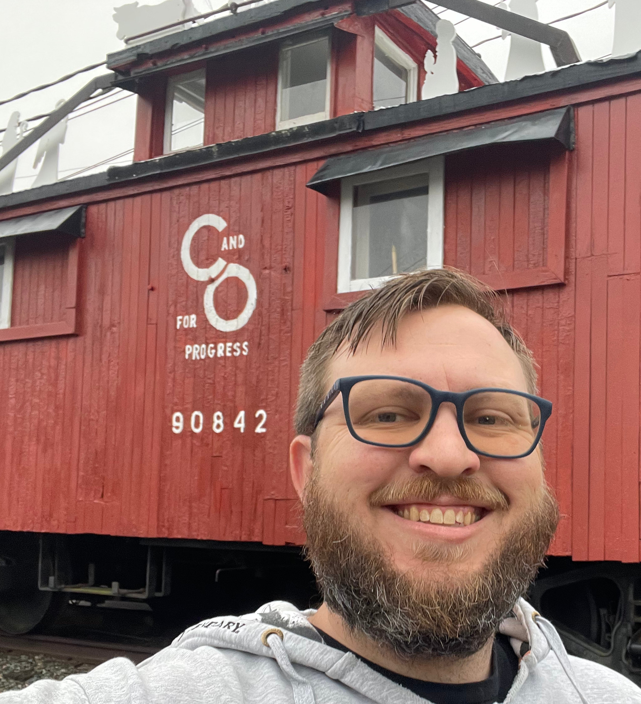

Versatile professional and natural leader, proven to be a subject matter expert in various fields. Dedicated employee, flexible in tasking. Uses creative problem solving for the benefit of the company.
Assemble wiring harnesses consisting of various wire, contact, and connector types. Quickly acclimated to a challenging R&D project. Counted on to tackle large and complex cables. Flexible in tasking, easily transitioning to other assignments to help meet the needs of the project. Lead shop proccess improvement team for three years. Contributed to two shop improvement projects that gained recognition at the sector level. Served as a shop lead for a year and a half. Responsible for training technicians in all technical specifications, company policies and proceedures, and ensuring their adherence in the shop. Assigned an tracked shop work-flow. Reported progress and constraints to management. Traveled to othersites to support engineering change packages and other statements of work to help acheive program milestones.
Area expert in main electrical harnesses for trainer aircraft, primary advisor to other Cherokee main electrical team members. First one called upon to troubleshoot and correct manufacturing errors on the Cherokee line. Primary trainer of new employees in main electrical for training aircraft. Responsible for initial quality control of individual sub assemblies and harnesses. Worked with lead, testing personnel, and engineering personnel to correct and improve manufacturing processes. Worked with lead to keep track of workload and task status of sub assemblies and harnesses, transitions to other tasking as required. In the lead's absence, was responsible for distributing workload and ensuring the flow of production is uninterrupted.
Used creative thinking to improve crate design for ongoing engine mount replacement project. New crate design was safer to build; cost less to manufacture; reduced crating costs for the customer, while also generating a higher profit margin for the company; and expanded shipping options for the customer, allowing them to return grounded aircraft to operation sooner.
Possessed competence in SONAR operation and tactics at a level far beyond what was required for the pay grade. Qualified as an at-sea area watch supervisor, responsible for directing other members of the SONAR team, including those at higher rank, in the operation and maintenance of the SONAR suite and other underwater sensors and equipment. Trained junior sailors in watch standing and maintenance tasks.